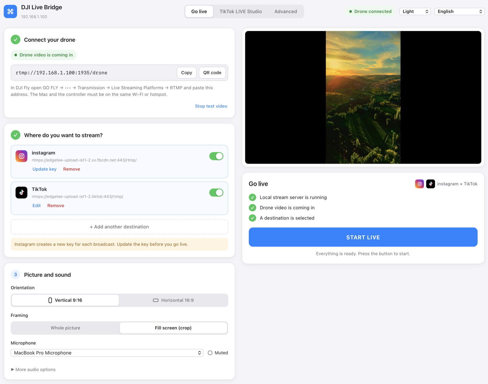
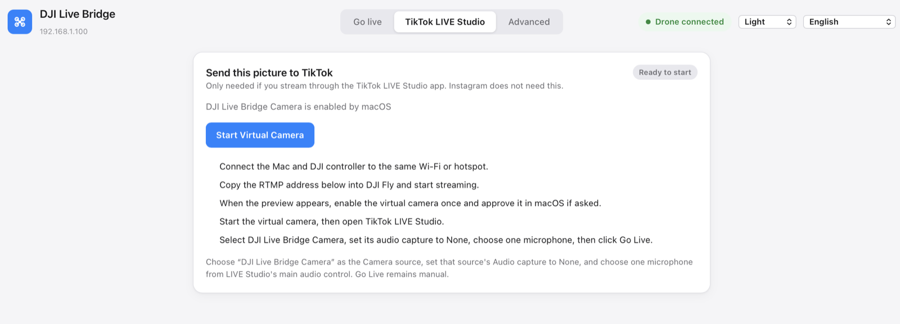
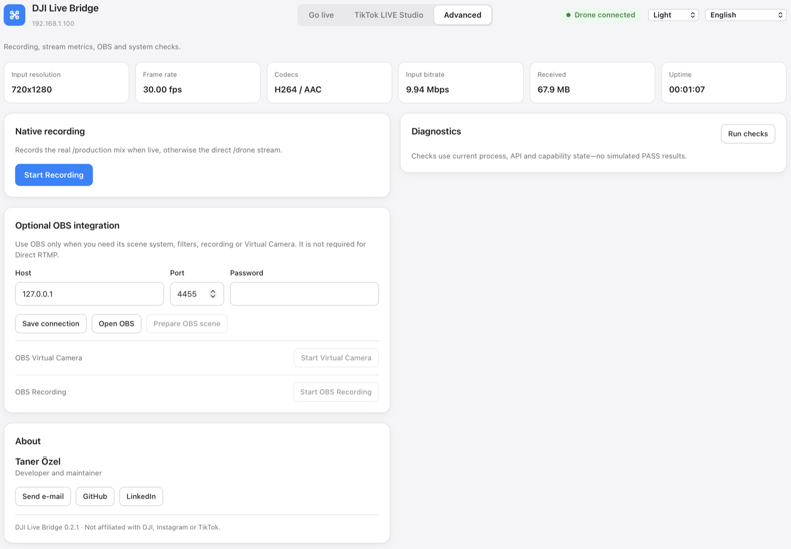

Vai in diretta dal tuo drone DJI su Instagram e TikTok
DJI Live Bridge prende lo streaming RTMP che DJI Fly manda al tuo computer e lo inoltra a più piattaforme insieme, oppure lo trasforma in una fotocamera virtuale per TikTok LIVE Studio, dove non serve nessuna chiave di streaming.

Una sola schermata: collega il drone, aggiungi le destinazioni, premi AVVIA DIRETTA.
Che cosa fa
Tutto gira sul tuo computer. Il video del drone non passa mai dal server di qualcun altro.
Più piattaforme insieme
Instagram, TikTok e qualsiasi destinazione RTMP personalizzata nella stessa diretta. L'immagine viene codificata una volta sola e inoltrata a ognuna, così una destinazione che non riesce non ferma le altre.
Nessuna chiave di streaming per TikTok
La fotocamera virtuale integrata compare in TikTok LIVE Studio come «DJI Live Bridge Camera», così puoi andare in diretta senza accesso RTMP.
Pensata per il video verticale
1080×1920 a 30 fps, 6 Mbps CBR, H.264 High, fotogrammi chiave ogni 2 secondi. Lo spazio vuoto viene riempito con una copia sfocata dell'inquadratura invece che con bande nere.
Nient'altro da installare
FFmpeg è già dentro l'app: niente Homebrew, niente Terminale, nessun download a parte. Il pacchetto macOS è firmato e autenticato da Apple.
Le chiavi restano nel portachiavi di sistema
Ogni chiave di streaming vive in una voce del portachiavi tutta sua, mai in un file di configurazione, negli argomenti di un processo o nei log.
Anteprima dal vivo e diagnostica
Un'anteprima locale a bassa latenza, dati reali della diretta presi dal media server, la registrazione e controlli di sistema che non fingono mai un esito positivo.
15 lingue, 5 temi
L'interfaccia segue la lingua del sistema e in arabo l'intero layout passa da destra a sinistra.
Come funziona
DJI Fly manda l'RTMP al tuo computer; al resto pensa il computer.
- Collega il droneIn DJI Fly: GO FLY → Trasmissione → Piattaforme di streaming → RTMP, e incolla l'indirizzo che mostra l'app. Il computer e il radiocomando devono stare sulla stessa rete Wi-Fi o sullo stesso hotspot del telefono.
- Scegli dove trasmettereAggiungi Instagram, TikTok o qualsiasi server RTMP con l'indirizzo del server e la chiave di streaming forniti dalla piattaforma. Le chiavi vengono salvate nel portachiavi di sistema.
- Premi AVVIA DIRETTAIl pulsante si sblocca quando il server locale è attivo, il video del drone sta arrivando ed è selezionata una destinazione. Da lì vedi il tempo trascorso, lo stato di ogni destinazione e i dati inviati.
TikTok senza chiave di streaming
TikTok dà le chiavi RTMP solo ad alcuni account. TikTok LIVE Studio non ha questo limite, perché accedi con il tuo account: gli serve solo una fotocamera. DJI Live Bridge fornisce quella fotocamera.
- Attiva la fotocamera virtuale una volta sola; la prima volta il sistema chiede l'autorizzazione.
- In TikTok LIVE Studio aggiungi una sorgente Fotocamera e scegli DJI Live Bridge Camera.
- Imposta l'acquisizione audio di quella sorgente su Nessuna e scegli un solo microfono in LIVE Studio.
- Premi Go Live in TikTok LIVE Studio.
La fotocamera porta solo il video, di proposito: così l'audio resta gestito da TikTok e si evita l'audio doppio.

Per chi vuole i dettagli
Registrazione, dati della diretta, integrazione facoltativa con OBS e controlli di sistema stanno nella scheda Avanzate, fuori dal percorso principale.

Installazione
- Scarica il DMGPrendi il file
aarch64per un Mac con Apple Silicon (M1 e successivi) oppure il filex86_64per un Mac Intel, poi trascina DJI Live Bridge nella cartella Applicazioni: la fotocamera virtuale funziona solo da lì. Su Windows esegui il programma di installazione-setup.exe. - AprilaL'installazione è tutta qui. FFmpeg è dentro l'app, quindi niente Homebrew, niente Terminale e nessun secondo download.
- Vai in direttaL'app per macOS è firmata e autenticata da Apple, quindi si apre senza avvisi.
L'app parla 15 lingue
Domande
Quali droni funzionano?
Qualsiasi drone la cui versione di DJI Fly offra RTMP sotto Piattaforme di streaming. L'app riceve un normale stream RTMP, quindi non dialoga con il drone. Sull'RC 2 può capitare che DJI Fly non avvii la trasmissione se al radiocomando non è collegato un microfono.
Devo installare FFmpeg?
No. L'app porta con sé il proprio FFmpeg, compilato dai sorgenti senza alcun componente GPL (LGPL, Apple VideoToolbox per l'H.264), quindi non c'è niente da installare né da tenere aggiornato. I testi delle licenze e i parametri esatti di compilazione sono dentro l'app, in Contents/Resources/licenses.
Serve OBS?
No. OBS è facoltativo e serve solo se vuoi le sue scene, i suoi filtri o la sua registrazione. L'RTMP diretto e la fotocamera virtuale funzionano senza.
Funziona su un Mac Intel?
Sì. Ogni versione esce con due download: uno per Apple Silicon e uno per Intel, entrambi firmati e autenticati, ognuno con il proprio FFmpeg incluso. Scegli il file che corrisponde al tuo Mac.
Funziona su Windows?
C'è una versione per Windows in beta. La trasmissione verso Instagram, TikTok e qualsiasi destinazione RTMP funziona, così come l'anteprima, la registrazione e la diagnostica. C'è anche la fotocamera virtuale integrata: il programma di installazione registra un dispositivo «DJI Live Bridge Camera» per TikTok LIVE Studio, OBS o Zoom. È più recente di quella per macOS, quindi, se non compare, resta possibile usare OBS Virtual Camera tramite l'integrazione facoltativa con OBS. Un'altra avvertenza: il programma di installazione non è ancora firmato, quindi Windows SmartScreen mostrerà un avviso.
Dove finiscono le mie chiavi di streaming?
Nel portachiavi di sistema, una voce per ogni destinazione. Vengono passate al media server locale sull'interfaccia di loopback quando vai in diretta e rimosse quando ti fermi. Non compaiono mai nel file di configurazione, negli argomenti dei processi o nei log.
Perché Instagram chiede una chiave nuova ogni volta?
È il comportamento di Instagram: genera una chiave di streaming nuova per ogni diretta. Usa «Aggiorna chiave» sulla scheda della destinazione prima di iniziare e ricordati di premere «Vai in diretta» su Instagram per rendere pubblica la trasmissione.
Perché la mia immagine è a 720p?
Il radiocomando DJI spesso manda 720p via RTMP. L'app mostra la risoluzione reale in ingresso e non spaccia l'uscita ingrandita per un 1080p nativo.